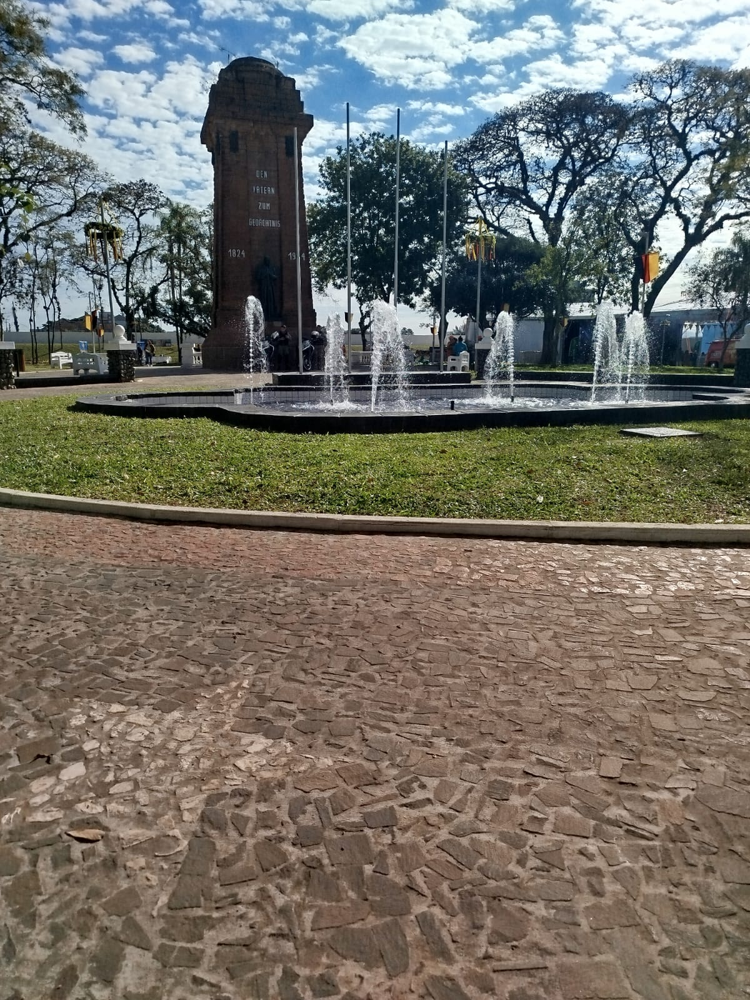

My name is Vinicius and i am a 19 year old brazilian, i live in São Leopoldo city, a southern city known for being the cradle of German colonization. Due circumstances, I didn't show much intelligence or aptitude for areas like mathematics and science, but today I'm very interested in the scientific and tecnological field.
I graduated as a Systems Development Technician from Senac São Leopoldo. The technical course lasted a year and a half and introduced me comprehensively to the IT market. I say "the course introduced me comprehensively" because I had already taken three short courses, also offered by Senac São Leopoldo, which initially introduced me to the field: an introduction to programming logic, an introduction to software testing, and an introduction to the Python language. I still plan to pursue a degree in Computer Science because I want to pursue a career in research.
During my studies, I worked extensively with VS Code, a widely used code editor for code development. I worked with languages like HTML and CSS to initially develop simple static websites, but I also used Javascript to develop more dynamic and feature-rich websites. A website I developed during my Front-end classes, which I still use today, is my portfolio website—the one you're using now which I use to showcase my work as a developer. In addition to websites, I also worked with API systems developed in Typescript, which integrated websites with databases, primarily related to user registration and login, which primarily involved user CRUD and tools like Bcrypt to encrypt passwords in the database. The database used throughout the technical course was MySQL. I also worked with user experience, which involved design and color theory. Some of my colleagues didn't appreciate or value these topics much, but I still deeply value them because I know that the main goal of an app or website is to please customers or users, and I think user experience is a good way to think like a user. I used Figma primarily to create interface mockups before developing the actual website or app, to ensure it was as user-friendly as possible.